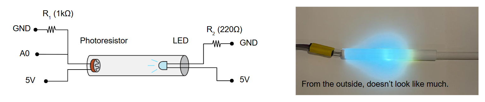
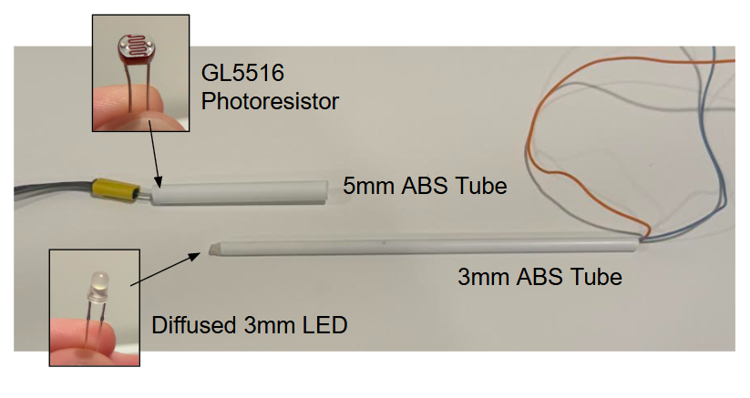
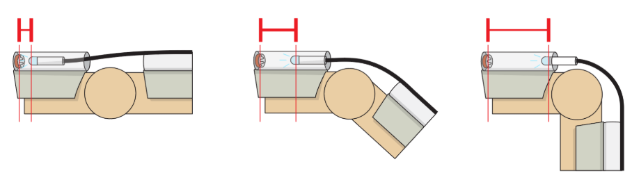
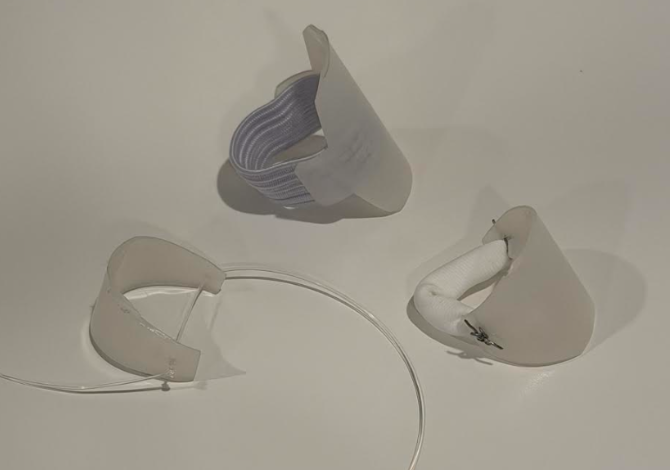
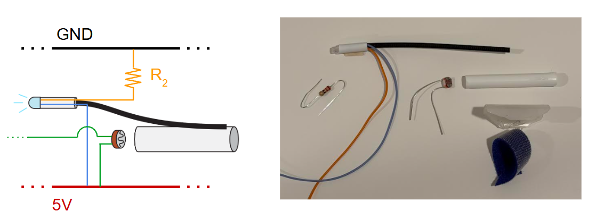
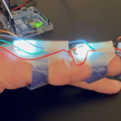
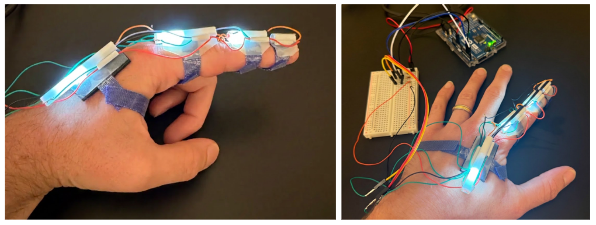
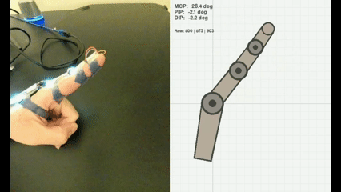
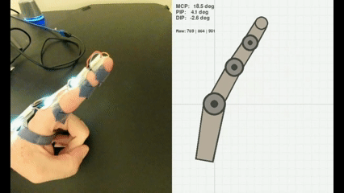

Finger Exoskeleton
Using Light Sensors to Read Finger Joint Angles
A key capability I would like to see developed in robotics is capturing detailed demonstration data from human hands without impeding the skills of whomever those hands belong to. This seems like it will get more important as the tasks attempted in robotics get more and more skilled: Today there are hand-tracking video systems / motion capture systems that could watch a human pick up a simple object on a clean tabletop and predict resulting hand and finger poses. But imagine trying to capture the hands of a chef working quickly, a surgeon operating, or a plumber working under a sink. Video systems become obstructed, and putting clunky devices on the hands themselves may prevent the skill in the first place.
Nonetheless these are really the only two standard approaches that I can think of: you either need to watch the hands, sensor-up the hands, or some combination. (There are some other exotic options like tapping into the internal movements of the arm to estimate state. See this insanely cool work from MIT).
Trying to work directly from video seems like a losing battle to me, although it certainly would be a clean setup for the demonstrator. I cannot see how you get around occlusion problems, and if you want to capture tactile sensing or forces you probably need a glove of some kind anyway. Not to mention, a robotic hand will probably use internal sensors to monitor joint positions, not video, so on-hand sensors creates a nice correspondence between robot joint sensing and the demonstration data.
One-Fifth of One Glove
If gloves are the way to go, how could I make some sort of joint-angle detecting glove, even if version one is unwieldy? I have been tinkering with various stretch and position sensors with very little success until a few weeks ago. I could not find anything that was (1) very responsive, (2) very accurate, and (3) could probably be made tiny. Responsive / accurate / tiny is also a combo that could quickly become expensive, and I on an arduino-level budget.
But I had a good idea a few weeks ago, and made a prototype that works! I was able to make a rough exoskeleton for my pointer finger (a "fexoskeleton", if you will), and the results are really nice with almost no signal filtering or other hoops to jump through. It worked right away. Before a breakdown of the system, here is a video of the results:
The video shows a realtime side-by-side of my finger moving and the measured joint angles displayed on a series of four linkages, corresponding to back-of-hand and the three segments of my pointer finger. Note that this only measures three joint angles of the finger bending towards/away from the palm, and does not capture finger spread (still trying to work that out).
The Light at the End of the Tunnel
The main idea I have been iterating on is to have some sort of sliding mechanism on the back of each finger segment that is pulled or elongated when the finger bends. When you bend your finger, the distance over each knuckle increases, and therefore any material along the back of the finger will stretch (like the back of a glove or even your own skin). If you can measure this displacement you can infer the amount of bending.
The breakthrough I had was to stop trying to mechanically actuate a sensor with this motion, and instead just try to track the distance between two points. On a whim I dug out a photodiode and LED from my original Arduino kit and found that the photodiode could very accurately reflect the distance of the LED provided there were no interfering light sources. This led to a very simple distance sensor: a small tube with a photoresistor at one end, and an LED sliding back and forth from the other end. The photoresistor changes resistance in response to light levels, so by monitoring the resistance of the photoresistor we can measure the position of the LED:

To test this setup I ordered some plastic tubes and make a crude sliding plunger system. A photoresistor at the end of a larger tube and a sort of LED magic wand on a narrower tube. By sliding the LED back and forth it was immediately clear that this had some nice properties: not only was it very responsive (instant change in resistance), it was also consistent. I could record a specific (length, resistance) and come back to it later without sensor drift. Now if these pieces could be coupled to the hand, we would have a working prototype.

Angler Fish
Really only two changes are needed to apply the above sensor to a finger segment: the outer tube needs to run along the back of a finger segment, and the LED+inner tube need to attached to the next segment along the finger. When you bend that joint, the outer tube with the photoresistor stay fixed, and the LED is pulled down the tube away from the photoresistor. When you open your hand, the LED is pushed back, closer to the photoresistor:

I started called this design the "angler fish" because you have a dangling light probe coming off of each finger segment. It was tricky to find a linking material (black line in the above diagram) that would be both flexible and also transmit force both ways. For example, a string would certainly pull the LED down the tube when curing a finger, but opening the finger would not push the LED back again- the string would just go limp. Something very stiff would also not work as it would either snap or permanently deform during bending. I finally settled on a segment of a zip tie, which seemed to strike a nice balance.
The other matter was keeping this one the finger itself, and I started looking at backplates and strap systems. Took many tries, but I found that thin nylon tubing and velcro were a good combo. Elastic also works well, but there seems to be a very fine line between finger sensor is too loose and finger does not get adequate bloodflow.

Above, some discarded "backplate" designs that were either too hard to fit correctly (top), too wobbly (left), or too hard to make (right). I eventually bought Velcro and superglued it to the inside. Worked great.
Complete Single Segment
With all the materials figured out we can outline a signal segment. A backplate sits along the back of the finger segment, held on with a velcro strap. A tube runs along this backplate, and contains an "angler fish" LED to slide along the prior segment, and a photoresistor to measure displacement of the future segment. The first of these in the chain (back of hand) does not need an LED, and the last in the chain (over your fingernail) does not need a photoresistor.
The photoresistor and the LED can both share a 5V line, which I ran along one side of the chain of sensors. The LEDs also need a ground line (plus a resistor), and photoresistors each need to be read by the Arduino in a voltage divider so they each have a returning signal line (green). I found the wiring/soldering of this thing to honestly be a headache, but I think that is just a lack of experience. On paper it is pretty straightforward:

A Fexoskeleton
Putting four of those together gives us a complete finger exoskeleton. An unintended design choice is that the tubing is thin enough that light comes through, so you get a really cool visual of lights attached to each finger segment shining through the plastic. In fact, you can watch each light move as you bend a portion of your finger:

Here is the whole contraption on my left hand:

To measure joint angles from this setup, we just need to find a correspondence between the resistance of the photodiodes and the angles of the fingers. I did not try to make this exact, but for the visual came up with a really easy calibration "procedure":
Turn on device
Open hand as wide as you can, and measure the resistance. My fingers can flex backwards slightly, so this corresponds to maybe -5 degrees.
Close fist as tight as you can, and measure the resistance. Again just eyeballing things, this is maybe ~100 degrees the other way.
Now when you get a resistance reading, linearly map it to this same range. With Arduino I set the read rate at 100Hz, but could certainly go even faster. I also used a very short-term sliding window average to smooth things out.
Results
As seen in the top video, we get pretty nice mirroring of the finger position. I did not try to quantify the joint accuracy but clearly it is responsive and I think with careful tuning could in fact be quite accurate. Most of the slop that is present I attribute to the backplates sliding around a little bit; the sensing itself seems to be very reliable.
I made sure to test that each joint could be measured independently, and tried a few fast motions to make sure that quick jerks/snaps would be picked up:
Showing each joint independently:

And responsiveness:

I am excited about this because not only does it work well, but I also think it could be vastly improved further and reduced in size. The limitations on size and construction for this prototype were (1) what can I buy on Amazon? and (2) what can I glue and solder by hand? I am sure this could be made much, much smaller and more accurate.
The next step is certainly to try to reduce size, simplify construction, and then make enough modules for a full glove. A huge benefit of a glove with a shared backing or shell is that it keeps all the sensors in the right place, and you can put on the whole system at once. In hindsight, individually velcroing each segment is not a good approach (I often needed help just to do the four straps pictured above).
I need to figure out how to capture finger spreading, and how the design might need modification for the thumb. These might actually be the same question! I am not at the moment jumping at the chance to hand-build ~16 more segments, but I think I will definitely come back to it in the future. I am (re-)learning how to CAD and 3D print for another project (to be posted soon), and I suspect that will be incredibly helpful for round two.
Recent Posts:
IROS 2026
Poster Presentation and Favorites
October 05, 2026
A Home Robocell
Planting a YAM in my Basement
October 02, 2026
Finger Exoskeleton
Using Light Sensors to Read Finger Joint Angles
September 26, 2026
More Posts